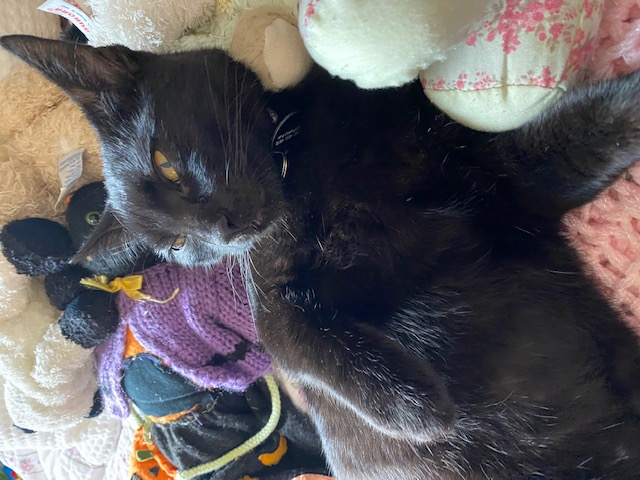

 <!DOCTYPE html>
<html lang="en" dir="ltr">

</html>
<head>
	<title>Lab 2 - My First HTML</title>
	<!-- Use UTF character set, a good idea with any webpage -->
  	<meta charset="UTF-8" />
	<!-- Set viewport so page remains consistently scaled w narrow devices -->
  	<meta name="viewport" content="width=device-width, initial-scale=1.0" />
	<!-- Include a sitewide CSS file for consistent styling across the site -->
	<link rel="stylesheet" type="text/css" href="../css/site.css">
	<!-- Lab-specifc CSS file for any special styling of this particular page -->
	<link rel="stylesheet" type="text/css" href="css/lab.css">
	
	<!-- load jQuery library to make javascript easier (must be above our lab js)-->
	<script src="https://code.jquery.com/jquery-3.6.4.min.js"></script>
	<!-- Link to javascript file - DEFER waits until all elements are rendered -->
	<script type="text/javascript" src="./js/lab.js" DEFER></script>
</head>
<body>
	<div id = "content" >
		<h1>Hello World!</h1>
		<p>Hi, my name is Sienna. I am a film & digital media major and plan to minor in dance or theater arts to continue my lifelong passion for ballet. I have two cats, Clover and Gorpicus. I love spending time in nature whether it be camping, hiking, or exploring. I love to crochet, read, and cook/bake in my free time!</p>
		</img>

	</div>
</body>
<body>
	<!-- Style this page by changing the CSS in ../css/site.css or css/lab.css -->
	<main id="content">
		<section>
			<h1>Lab 2 - HTML & CSS Starter</h1>
			<div class="minor-section">
					<h2>Challenge</h2>
					<p>In Lab 2 I edited my html page, adding a title, an image, and a body paragraph. I added a photo of my cat, Clover, and changed the headers and sections purple.</p>
			</div>

			<div class="minor-section">
					<h2>Problems</h2>
					<p>I had trouble getting it to run in the browser, so had to go back and edit the html document multiple times until it worked. </p>
			</div>

			<div class="minor-section">
					<h2>Reflection</h2>
					<p>This lab took a lot of trial and erorr which taught me patience and I was able to get more familar with html. I put my best effort into my work, this is new to me so it took my all. Unfortunatley, I was unable to work with a partner for this assigment but the positive side of that is that I was able to take ample time to fully understand each element. Watching the html introductory videos prior to completing the lab really helped. </p>
			</div>

			<div class="minor-section">
					<h2>Results</h2>
					<div id="output"></div>
			</div>
		</section>
		<nav id="links">
			<!-- Put links to other pages (including the homepage) here. -->
		</nav>
	</main>
</body>
</html>
